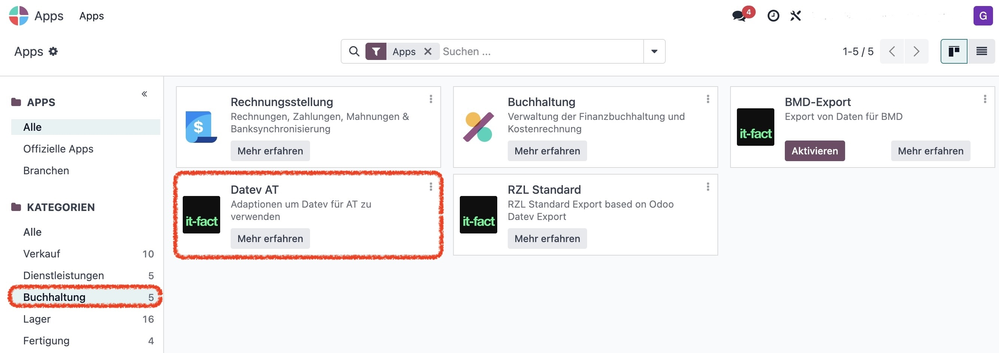

Modul: datev_at | Version: Odoo 18.0 | Lizenz: OPL-1 | Preis: 500 EUR
Lege das Modul in den Add-on-Pfad und installiere es über das Odoo-Backend.


Im Kunden-/Lieferantenformular unter Buchhaltung kann ein Standardkonto definiert werden.
Längen für Sach-, Debitoren- und Kreditorenkonten lassen sich in den Einstellungen definieren.

Im Entwicklermodus lassen sich zusätzliche Filteroptionen aktivieren oder deaktivieren.

Wir sind Odoo-Buchhaltungs-Spezialisten in Österreich. Mit DATEV-, RZL- und BMD-Schnittstellen sowie zertifizierter Registrierkassa helfen wir Unternehmen, ihre Buchhaltung digital zu optimieren.
Mehr erfahren: https://it-fact.com